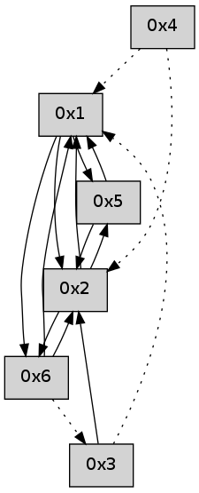

>> << IDX [start] -100 -25 -5 +0 +5 +25 +100 [465.191854]
 Previous packets
----------------------------------------------------------------------
460.270766 beacon01(adaf) #0 coord=01,02,05,03,04,06 cycle=432.0ms assoc
-- color-indic=0 64 d2 f1
460.280729 beacon02(adaf) #0 coord=01,02,05,03,04,06 cycle=432.0ms assoc 64 83 0e
460.290727 beacon05(adaf) #0 coord=01,02,05,03,04,06 cycle=432.0ms assoc 64 25 24
460.300729 beacon03(adaf) #0 coord=01,02,05,03,04,06 cycle=432.0ms assoc 64 b9 00
460.310727 beacon04(adaf) #0 coord=01,02,05,03,04,06 cycle=432.0ms assoc 64 1f 2a
460.320728 beacon06(adaf) #0 coord=01,02,05,03,04,06 cycle=432.0ms assoc 64 6b 36
460.332414 [Hello(5): seq=220 sym=2,1 asym=6 sysInfo= stat=2:11,0,0,0/1:3,0,0,0/6:0,0,0,0]
----------------------------------------------------------------------
460.762876 beacon01(adaf) #0 coord=01,02,05,03,04,06 cycle=432.0ms assoc
-- color-indic=0 64 9f f6
460.772837 beacon02(adaf) #0 coord=01,02,05,03,04,06 cycle=432.0ms assoc 64 ce 09
460.782836 beacon05(adaf) #0 coord=01,02,05,03,04,06 cycle=432.0ms assoc 64 68 23
460.792837 beacon03(adaf) #0 coord=01,02,05,03,04,06 cycle=432.0ms assoc 64 f4 07
460.802837 beacon04(adaf) #0 coord=01,02,05,03,04,06 cycle=432.0ms assoc 64 52 2d
460.812837 beacon06(adaf) #0 coord=01,02,05,03,04,06 cycle=432.0ms assoc 64 26 31
460.823972 [Hello(1): seq=158 sym=5,3,6 sysInfo= stat=5:12,0,0,0/3:0,0,0,0/6:6,0,0,0]
----------------------------------------------------------------------
461.254983 beacon01(adaf) #0 coord=01,02,05,03,04,06 cycle=432.0ms assoc
-- color-indic=0 64 5b 99
461.264945 beacon02(adaf) #0 coord=01,02,05,03,04,06 cycle=432.0ms assoc 64 0a 66
461.274944 beacon05(adaf) #0 coord=01,02,05,03,04,06 cycle=432.0ms assoc 64 ac 4c
461.284945 beacon03(adaf) #0 coord=01,02,05,03,04,06 cycle=432.0ms assoc 64 30 68
461.294945 beacon04(adaf) #0 coord=01,02,05,03,04,06 cycle=432.0ms assoc 64 96 42
461.304945 beacon06(adaf) #0 coord=01,02,05,03,04,06 cycle=432.0ms assoc 64 e2 5e
461.316644 [Hello(5): seq=221 sym=2,1 asym=6 sysInfo= stat=2:12,0,0,0/1:4,0,0,0/6:0,0,0,0]
----------------------------------------------------------------------
461.747092 beacon01(adaf) #0 coord=01,02,05,03,04,06 cycle=432.0ms assoc
-- color-indic=0 64 17 29
461.757053 beacon02(adaf) #0 coord=01,02,05,03,04,06 cycle=432.0ms assoc 64 46 d6
461.767053 beacon05(adaf) #0 coord=01,02,05,03,04,06 cycle=432.0ms assoc 64 e0 fc
461.777053 beacon03(adaf) #0 coord=01,02,05,03,04,06 cycle=432.0ms assoc 64 7c d8
461.787055 beacon04(adaf) #0 coord=01,02,05,03,04,06 cycle=432.0ms assoc 64 da f2
461.797053 beacon06(adaf) #0 coord=01,02,05,03,04,06 cycle=432.0ms assoc 64 ae ee
461.807837 [Hello(1): seq=159 sym=5,6 sysInfo= stat=5:13,0,0,0/6:6,0,0,0]
461.812348 [Hello(4): seq=260 asym=1,6 sysInfo= stat=1:1,0,0,0/6:0,0,0,0]
461.814151 [Hello(2): seq=756 sym=5,6,1 sysInfo= stat=5:13,0,0,0/6:0,0,0,0/1:9,0,0,0]
----------------------------------------------------------------------
462.239199 beacon01(adaf) #0 coord=01,02,05,03,04,06 cycle=432.0ms assoc
-- color-indic=0 64 d3 46
462.249160 beacon02(adaf) #0 coord=01,02,05,03,04,06 cycle=432.0ms assoc 64 82 b9
462.259160 beacon05(adaf) #0 coord=01,02,05,03,04,06 cycle=432.0ms assoc 64 24 93
462.269160 beacon03(adaf) #0 coord=01,02,05,03,04,06 cycle=432.0ms assoc 64 b8 b7
462.279160 beacon04(adaf) #0 coord=01,02,05,03,04,06 cycle=432.0ms assoc 64 1e 9d
462.289161 beacon06(adaf) #0 coord=01,02,05,03,04,06 cycle=432.0ms assoc 64 6a 81
462.300832 [Hello(5): seq=222 sym=2,1 sysInfo= stat=2:13,0,0,0/1:5,0,0,0]
----------------------------------------------------------------------
462.731310 beacon01(adaf) #0 coord=01,02,05,03,04,06 cycle=432.0ms assoc
-- color-indic=0 64 8d 27
462.741271 beacon02(adaf) #0 coord=01,02,05,03,04,06 cycle=432.0ms assoc 64 dc d8
462.751271 beacon05(adaf) #0 coord=01,02,05,03,04,06 cycle=432.0ms assoc 64 7a f2
462.761271 beacon03(adaf) #0 coord=01,02,05,03,04,06 cycle=432.0ms assoc 64 e6 d6
462.771271 beacon04(adaf) #0 coord=01,02,05,03,04,06 cycle=432.0ms assoc 64 40 fc
462.781272 beacon06(adaf) #0 coord=01,02,05,03,04,06 cycle=432.0ms assoc 64 34 e0
462.792702 [Hello(1): seq=160 sym=5,2,6 sysInfo= stat=5:14,0,0,0/2:0,0,0,0/6:7,0,0,0]
462.796583 [Hello(4): seq=261 asym=2,1 sysInfo= stat=2:0,0,0,0/1:1,0,0,0]
----------------------------------------------------------------------
463.223418 beacon01(adaf) #0 coord=01,02,05,03,04,06 cycle=432.0ms assoc
-- color-indic=0 64 49 48
463.233378 beacon02(adaf) #0 coord=01,02,05,03,04,06 cycle=432.0ms assoc 64 18 b7
463.243382 beacon05(adaf) #0 coord=01,02,05,03,04,06 cycle=432.0ms assoc 64 be 9d
463.253380 beacon03(adaf) #0 coord=01,02,05,03,04,06 cycle=432.0ms assoc 64 22 b9
463.263380 beacon04(adaf) #0 coord=01,02,05,03,04,06 cycle=432.0ms assoc 64 84 93
463.273382 beacon06(adaf) #0 coord=01,02,05,03,04,06 cycle=432.0ms assoc 64 f0 8f
463.285007 [Hello(5): seq=223 sym=2,1 sysInfo= stat=2:14,0,0,0/1:6,0,0,0]
----------------------------------------------------------------------
463.715528 beacon01(adaf) #0 coord=01,02,05,03,04,06 cycle=432.0ms assoc
-- color-indic=0 64 05 f8
463.725490 beacon02(adaf) #0 coord=01,02,05,03,04,06 cycle=432.0ms assoc 64 54 07
463.735489 beacon05(adaf) #0 coord=01,02,05,03,04,06 cycle=432.0ms assoc 64 f2 2d
463.745489 beacon03(adaf) #0 coord=01,02,05,03,04,06 cycle=432.0ms assoc 64 6e 09
463.755491 beacon04(adaf) #0 coord=01,02,05,03,04,06 cycle=432.0ms assoc 64 c8 23
463.765489 beacon06(adaf) #0 coord=01,02,05,03,04,06 cycle=432.0ms assoc 64 bc 3f
463.776587 [Hello(1): seq=161 sym=5,2,6 asym= sysInfo= stat=5:15,0,0,0/2:0,0,0,0/6:7,0,0,0]
463.780809 [Hello(4): seq=262 asym=2,1 sysInfo= stat=2:0,0,0,0/1:1,0,0,0]
----------------------------------------------------------------------
464.207637 beacon01(adaf) #0 coord=01,02,05,03,04,06 cycle=432.0ms assoc
-- color-indic=0 64 c1 97
464.217598 beacon02(adaf) #0 coord=01,02,05,03,04,06 cycle=432.0ms assoc 64 90 68
464.227597 beacon05(adaf) #0 coord=01,02,05,03,04,06 cycle=432.0ms assoc 64 36 42
464.237599 beacon03(adaf) #0 coord=01,02,05,03,04,06 cycle=432.0ms assoc 64 aa 66
464.247600 beacon04(adaf) #0 coord=01,02,05,03,04,06 cycle=432.0ms assoc 64 0c 4c
464.257600 beacon06(adaf) #0 coord=01,02,05,03,04,06 cycle=432.0ms assoc 64 78 50
464.269249 [Hello(5): seq=224 sym=2,1 sysInfo= stat=2:15,0,0,0/1:7,0,0,0]
----------------------------------------------------------------------
464.699746 beacon01(adaf) #0 coord=01,02,05,03,04,06 cycle=432.0ms assoc
-- color-indic=0 64 8c 90
464.709707 beacon02(adaf) #0 coord=01,02,05,03,04,06 cycle=432.0ms assoc 64 dd 6f
464.719707 beacon05(adaf) #0 coord=01,02,05,03,04,06 cycle=432.0ms assoc 64 7b 45
464.729707 beacon03(adaf) #0 coord=01,02,05,03,04,06 cycle=432.0ms assoc 64 e7 61
464.739707 beacon04(adaf) #0 coord=01,02,05,03,04,06 cycle=432.0ms assoc 64 41 4b
464.749708 beacon06(adaf) #0 coord=01,02,05,03,04,06 cycle=432.0ms assoc 64 35 57
464.766054 [Hello(1): seq=162 sym=5,2,6 sysInfo= stat=5:0,0,0,0/2:1,0,0,0/6:7,0,0,0]